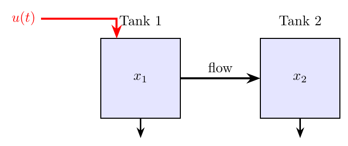
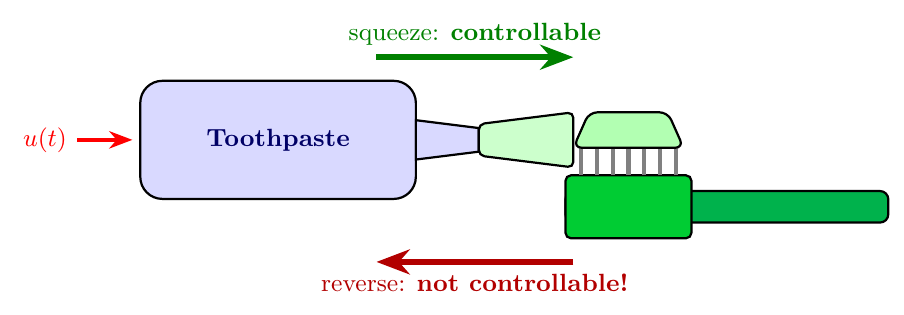
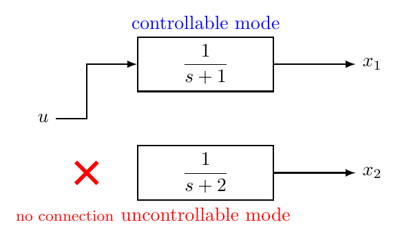
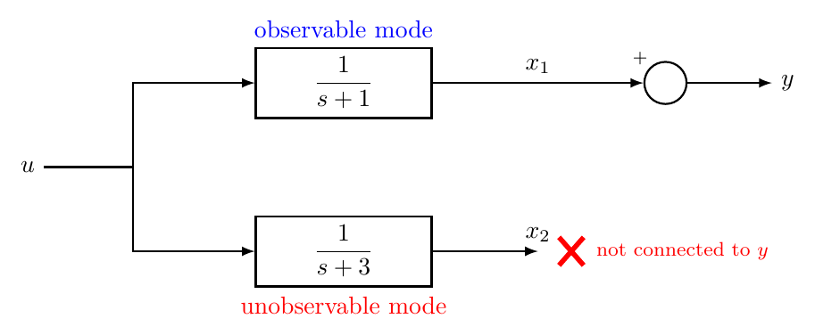

“Before you try to control a system, first ask: can you actually control it? And before you try to estimate its state, ask: can you actually observe it?”
State feedback control (Chapter 11) places closed-loop poles by feeding back the full state vector. But two fundamental questions must be answered first: is it even possible to steer every state of the system using the available input? And can we determine all the internal states from the output measurements?
These questions lead to controllability and observability — structural properties that determine whether a control or estimation design is feasible at all.
Learning Objectives After completing this chapter, you should be able to:
Explain what controllability and observability mean physically.
Construct the controllability matrix and apply the rank test.
Construct the observability matrix and apply the rank test.
Recognise uncontrollable and unobservable modes from block diagrams.
Convert a transfer function to controllable and observable canonical forms.
Use MATLAB to check controllability and observability.
Consider a state-space system \[\dot{x}(t) = Ax(t) + Bu(t), \qquad y(t) = Cx(t).\] We say this system is controllable if, starting from any initial state \(x(0)\), there exists an input \(u(t)\) that can drive the state to any desired final state in finite time.
The pair \((A,B)\) is controllable if for any initial state \(x_0\) and any target state \(x_f\), there exists an input \(u(t)\) defined over a finite interval \([0, t_f]\) that drives \(x(0)=x_0\) to \(x(t_f)=x_f\).
Think of it this way: controllability tells you whether the input has a “path” to influence every part of the system’s internal state. If some state variable is completely disconnected from the input — no matter what you do with \(u(t)\) — you cannot change it. That state is uncontrollable.
Consider two water tanks connected by a pipe (Figure 1.1). Water flows in through \(u(t)\) to Tank 1, which feeds Tank 2 through the pipe. By adjusting \(u(t)\), you can control the level in Tank 1 directly, and the level in Tank 2 indirectly (through Tank 1). The input can influence both states — the system is controllable.
Now imagine the pipe between the tanks is removed. Tank 2 just drains on its own. No matter how you adjust \(u(t)\), you cannot change the level in Tank 2. The state \(x_2\) is uncontrollable.

Consider squeezing toothpaste from a tube onto a toothbrush (Figure 1.2). By squeezing the tube (your input \(u\)), you can move paste from the tube to the brush — you can drive the “paste on brush” state to any desired amount. But can you reverse the process? Can you put the toothpaste back into the tube?
No. Once the paste is out, you cannot return it. The “paste inside the tube” state is not controllable in the reverse direction — your input (squeezing) can only move paste one way. This is a system where the state space is only partially reachable from a given initial condition.

Analogy vs. formal definition The toothpaste analogy is a loose illustration of irreversibility and reachability in nonlinear, constrained systems — it is not the formal definition of controllability for linear systems. In a controllable linear system \(\dot{x}=Ax+Bu\), the input \(u(t)\) can drive the state in both directions along every state dimension (positive and negative). There is no “one-way” restriction. The analogy is useful for building initial intuition, but do not carry its limitations into the mathematics.
How do we test controllability mathematically? For an \(n\)-th order system with state matrix \(A \in \mathbb{R}^{n\times n}\) and input matrix \(B \in \mathbb{R}^{n\times 1}\), we form the controllability matrix:
\[\begin{equation} \mathcal{C} = \begin{bmatrix} B & AB & A^2B & \cdots & A^{n-1}B \end{bmatrix} \label{eq:ctrl_matrix} \end{equation}\] This is an \(n \times n\) matrix (for a single-input system). The system is controllable if and only if \[\mathrm{rank}(\mathcal{C}) = n.\]
For a single-input system, \(\mathcal{C}\) is an \(n\times n\) square matrix. The rank test simplifies to: the system is controllable if and only if \(\det(\mathcal{C}) \neq 0\).
The solution of \(\dot{x} = Ax + Bu\) is \[x(t) = e^{At}x(0) + \int_0^t e^{A(t-\tau)} B\, u(\tau)\, d\tau.\] The integral term represents what the input can contribute. By the Cayley–Hamilton theorem , \(e^{At}\) can be written as a polynomial in \(A\) of degree at most \(n-1\). So the input can push the state in the directions \(B, AB, A^2B, \ldots, A^{n-1}B\). If these \(n\) vectors span all of \(\mathbb{R}^n\), the input can reach any point — the system is controllable.
Consider \[A = \begin{bmatrix} 0 & 1 \\ -2 & -3 \end{bmatrix}, \qquad B = \begin{bmatrix} 0 \\ 1 \end{bmatrix}.\] The controllability matrix is \[\mathcal{C} = \begin{bmatrix} B & AB \end{bmatrix} = \begin{bmatrix} 0 & 1 \\ 1 & -3 \end{bmatrix}.\] We compute \(\det(\mathcal{C}) = (0)(-3) - (1)(1) = -1 \neq 0\), so the system is controllable.
Now consider \[A = \begin{bmatrix} -1 & 0 \\ 0 & -2 \end{bmatrix}, \qquad B = \begin{bmatrix} 1 \\ 0 \end{bmatrix}.\] This is a diagonal system with two decoupled modes. The input enters only through \(x_1\): \[\dot{x}_1 = -x_1 + u, \qquad \dot{x}_2 = -2x_2.\] The controllability matrix is \[\mathcal{C} = \begin{bmatrix} 1 & -1 \\ 0 & 0 \end{bmatrix}.\] The second row is all zeros, so \(\det(\mathcal{C}) = 0\) and \(\mathrm{rank}(\mathcal{C}) = 1 < 2\). The system is not controllable. The state \(x_2\) decays on its own and cannot be influenced by \(u\).
The block diagram in Figure 1.3 shows this uncontrollable system. The second mode (\(x_2\)) is completely disconnected from the input.

Consider a system with \[A = \begin{bmatrix} 0 & 1 & 0 \\ 0 & 0 & 1 \\ -6 & -11 & -6 \end{bmatrix}, \quad B = \begin{bmatrix} 0 \\ 0 \\ 1 \end{bmatrix}.\] We compute: \[AB = \begin{bmatrix} 0 \\ 1 \\ -6 \end{bmatrix}, \qquad A^2B = A(AB) = \begin{bmatrix} 1 \\ -6 \\ 25 \end{bmatrix}.\] So \[\mathcal{C} = \begin{bmatrix} B & AB & A^2B \end{bmatrix}=\begin{bmatrix} 0 & 0 & 1 \\ 0 & 1 & -6 \\ 1 & -6 & 25 \end{bmatrix}.\] Computing the determinant (expand along the first column): \[\det(\mathcal{C}) = 1 \cdot \det\begin{bmatrix} 0 & 1 \\ 1 & -6 \end{bmatrix} = 1 \cdot (0-1) = -1 \neq 0.\] The system is controllable.
Listing [lst:ch10_controllability_check] shows how to form the controllability matrix and test its rank in MATLAB.
Checking controllability in MATLAB
import numpy as np
import control as ctrl
A = np.array([[0, 1, 0], [0, 0, 1], [-6, -11, -6]])
B = np.array([[0], [0], [1]])
# Form controllability matrix
Co = ctrl.ctrb(A, B)
# Check rank
n = A.shape[0]
r = np.linalg.matrix_rank(Co)
print("System order = %d, np.linalg.matrix_rank(C) = %d" % (n, r,))
if r == n:
print("System is controllable.")
else:
print("System is NOT controllable.")A = [0 1 0; 0 0 1; -6 -11 -6];
B = [0; 0; 1];
% Form controllability matrix
Co = ctrb(A, B);
% Check rank
n = size(A,1);
r = rank(Co);
fprintf('System order = %d, rank(C) = %d\n', n, r);
if r == n
fprintf('System is controllable.\n');
else
fprintf('System is NOT controllable.\n');
endCommon Mistake MATLAB’s rank() uses a numerical tolerance. For a matrix that is nearly singular, the result depends on rounding. Always check the singular values (svd(Co)) if you are unsure — a very small singular value suggests the system is “almost uncontrollable”.
Observability is the dual of controllability: can we determine every state by observing the output?
The pair \((A,C)\) is observable if the initial state \(x(0)\) can be uniquely determined from the output \(y(t)\) and input \(u(t)\) measured over a finite time interval \([0, t_f]\).
If a system is observable, then every internal state leaves a “fingerprint” on the output. If it is not, some internal dynamics are invisible — they evolve without affecting the output at all.
Imagine a building with temperature sensors only in certain rooms. If Room A and Room B are connected (heat flows between them), a sensor in Room A can detect temperature changes in Room B indirectly. But if Room C is completely insulated from all monitored rooms, its temperature is invisible to the sensors — it is an unobservable state.
For a system with \(A \in \mathbb{R}^{n\times n}\) and \(C \in \mathbb{R}^{1\times n}\), the observability matrix is \[\begin{equation} \mathcal{O} = \begin{bmatrix} C \\ CA \\ CA^2 \\ \vdots \\ CA^{n-1} \end{bmatrix}. \label{eq:obs_matrix} \end{equation}\] The system is observable if and only if \(\mathrm{rank}(\mathcal{O}) = n\).
The logic mirrors controllability. The output \(y(t) = Ce^{At}x(0) + \ldots\) contains information about \(x(0)\) through the terms \(Cx(0)\), \(CAx(0)\), \(CA^2x(0)\), and so on. If these row vectors span all of \(\mathbb{R}^n\), we can reconstruct \(x(0)\) uniquely from \(y(t)\).
Take \[A = \begin{bmatrix} 0 & 1 \\ -2 & -3 \end{bmatrix}, \qquad C = \begin{bmatrix} 1 & 0 \end{bmatrix}.\] The observability matrix is \[\mathcal{O} = \begin{bmatrix} C \\ CA \end{bmatrix} = \begin{bmatrix} 1 & 0 \\ 0 & 1 \end{bmatrix}.\] Since \(\det(\mathcal{O}) = 1 \neq 0\), the system is observable. We can determine both states from the output \(y = x_1\).
Consider the diagonal system \[A = \begin{bmatrix} -1 & 0 \\ 0 & -3 \end{bmatrix}, \qquad C = \begin{bmatrix} 1 & 0 \end{bmatrix}.\] The output is \(y = x_1\). We cannot see \(x_2\) at all: \[\mathcal{O} = \begin{bmatrix} 1 & 0 \\ -1 & 0 \end{bmatrix}.\] \(\det(\mathcal{O}) = 0\), so the system is not observable. The mode \(x_2\) is hidden from the output.

Listing [lst:ch10_observability_check] shows the corresponding procedure for observability.
Checking observability in MATLAB
import numpy as np
import control as ctrl
A = np.array([[-1, 0], [0, -3]])
C = np.array([1, 0])
# Form observability matrix
Ob = ctrl.obsv(A, C)
# Check rank
n = A.shape[0]
r = np.linalg.matrix_rank(Ob)
print("System order = %d, np.linalg.matrix_rank(O) = %d" % (n, r,))
if r == n:
print("System is observable.")
else:
print("System is NOT observable.")A = [-1 0; 0 -3];
C = [1 0];
% Form observability matrix
Ob = obsv(A, C);
% Check rank
n = size(A,1);
r = rank(Ob);
fprintf('System order = %d, rank(O) = %d\n', n, r);
if r == n
fprintf('System is observable.\n');
else
fprintf('System is NOT observable.\n');
endControllability and observability are directly connected.
The pair \((A, B)\) is controllable if and only if the pair \((A^\top, B^\top)\) is observable.
To see why, note that the controllability matrix of \((A,B)\) is \[\mathcal{C} = \begin{bmatrix} B & AB & \cdots & A^{n-1}B \end{bmatrix}\] while the observability matrix of \((A^\top, B^\top)\) is \[\mathcal{O}_{\text{dual}} = \begin{bmatrix} B^\top \\ B^\top A^\top \\ \vdots \\ B^\top (A^\top)^{n-1} \end{bmatrix} = \mathcal{C}^\top.\] Since transposing does not change the rank, the two conditions are equivalent.
duality means that any theorem or method for controllability has a mirror version for observability (and vice versa). In Chapter 10, we will use this: observer design is “dual” to state feedback design.
Consider a state-space model \((A,B,C,D)\) with transfer function \[G(s) = C(sI-A)^{-1}B + D.\] The eigenvalues of \(A\) are the poles of the state-space model. However, the transfer function may have fewer poles than \(A\) has eigenvalues. Why? Because uncontrollable or unobservable modes cancel in the transfer function.
Consider the system \[A = \begin{bmatrix} -1 & 0 \\ 0 & -2 \end{bmatrix}, \quad B = \begin{bmatrix} 1 \\ 0 \end{bmatrix}, \quad C = \begin{bmatrix} 1 & 1 \end{bmatrix}, \quad D = 0.\] The eigenvalues of \(A\) are \(-1\) and \(-2\). But the transfer function is \[G(s) = C(sI-A)^{-1}B = \begin{bmatrix} 1 & 1 \end{bmatrix} \begin{bmatrix} \frac{1}{s+1} & 0 \\ 0 & \frac{1}{s+2} \end{bmatrix} \begin{bmatrix} 1 \\ 0 \end{bmatrix} = \frac{1}{s+1}.\] The pole at \(s=-2\) has disappeared! It corresponds to the uncontrollable state \(x_2\) (which \(B\) does not reach). The transfer function only “sees” the controllable and observable part of the system.
Hidden Dynamics If a system has uncontrollable or unobservable modes, the transfer function hides them. This is dangerous: an unstable hidden mode would not appear in the transfer function, but the system would still be internally unstable. Always check controllability and observability before relying solely on transfer function analysis.
Listing [lst:ch10_hidden_modes] compares the state-space poles with the transfer function poles.
Detecting hidden modes
import numpy as np
import control as ctrl
A = np.array([[-1, 0], [0, -2]]); B = np.array([[1], [0]]); C = np.array([[1, 1]]); D = 0
sys_ss = ctrl.ss(A, B, C, D)
sys_tf = ctrl.tf(sys_ss) # Transfer function: 1/(s+1)
# The pole at s=-2 is missing from the TF!
print("State-space poles:"); print(np.linalg.eigvals(A))
print("Transfer function poles:"); print(ctrl.poles(sys_tf))
# Check controllability
Co = ctrl.ctrb(A, B)
print("rank(Co) = %d (need %d for controllability)" % (np.linalg.matrix_rank(Co), A.shape[0]))A = [-1 0; 0 -2]; B = [1; 0]; C = [1 1]; D = 0;
sys_ss = ss(A, B, C, D);
sys_tf = tf(sys_ss); % Transfer function: 1/(s+1)
% The pole at s=-2 is missing from the TF!
fprintf('State-space poles: '); disp(eig(A)');
fprintf('Transfer function poles: '); disp(pole(sys_tf)');
% Check controllability
Co = ctrb(A, B);
fprintf('rank(Co) = %d (need %d for controllability)\n', rank(Co), size(A,1));A transfer function can be realised in many different state-space forms. Two are particularly important: the ccf (CCF) and the ocf (OCF), which provide systematic realisations guaranteed to be controllable or observable, respectively.
Given a transfer function \[G(s) = \frac{b_1 s^{n-1} + b_2 s^{n-2} + \cdots + b_n}{s^n + a_1 s^{n-1} + a_2 s^{n-2} + \cdots + a_n}\] the controllable canonical form is:
\[A_c = \begin{bmatrix} 0 & 1 & 0 & \cdots & 0 \\ 0 & 0 & 1 & \cdots & 0 \\ \vdots & & & \ddots & \vdots \\ 0 & 0 & 0 & \cdots & 1 \\ -a_n & -a_{n-1} & -a_{n-2} & \cdots & -a_1 \end{bmatrix}, \quad B_c = \begin{bmatrix} 0 \\ 0 \\ \vdots \\ 0 \\ 1 \end{bmatrix}\] \[C_c = \begin{bmatrix} b_n & b_{n-1} & \cdots & b_1 \end{bmatrix}, \quad D_c = 0\]
Notice the structure: the denominator coefficients \(a_1, \ldots, a_n\) appear in the last row of \(A_c\), and \(B_c\) has a 1 only in the last entry. This structure guarantees controllability.
Given \[G(s) = \frac{3s + 5}{s^2 + 4s + 3},\] we identify \(a_1 = 4\), \(a_2 = 3\), \(b_1 = 3\), \(b_2 = 5\). The CCF is: \[A_c = \begin{bmatrix} 0 & 1 \\ -3 & -4 \end{bmatrix}, \quad B_c = \begin{bmatrix} 0 \\ 1 \end{bmatrix}, \quad C_c = \begin{bmatrix} 5 & 3 \end{bmatrix}, \quad D_c = 0.\]
Let us verify controllability: \[\mathcal{C} = \begin{bmatrix} B_c & A_c B_c \end{bmatrix} = \begin{bmatrix} 0 & 1 \\ 1 & -4 \end{bmatrix}, \quad \det(\mathcal{C}) = -1 \neq 0. \quad \checkmark\]
The observable canonical form is the dual of the CCF. For the same transfer function \(G(s)\):
\[A_o = \begin{bmatrix} 0 & 0 & \cdots & 0 & -a_n \\ 1 & 0 & \cdots & 0 & -a_{n-1} \\ 0 & 1 & \cdots & 0 & -a_{n-2} \\ \vdots & & \ddots & & \vdots \\ 0 & 0 & \cdots & 1 & -a_1 \end{bmatrix}, \quad B_o = \begin{bmatrix} b_n \\ b_{n-1} \\ \vdots \\ b_1 \end{bmatrix}\] \[C_o = \begin{bmatrix} 0 & 0 & \cdots & 0 & 1 \end{bmatrix}, \quad D_o = 0\]
Notice that \(A_o = A_c^\top\), \(B_o = C_c^\top\), \(C_o = B_c^\top\). This is the duality in action. The OCF guarantees observability.
For \(G(s) = \dfrac{3s+5}{s^2+4s+3}\), the OCF is: \[A_o = \begin{bmatrix} 0 & -3 \\ 1 & -4 \end{bmatrix}, \quad B_o = \begin{bmatrix} 5 \\ 3 \end{bmatrix}, \quad C_o = \begin{bmatrix} 0 & 1 \end{bmatrix}, \quad D_o = 0.\]
Verify observability: \[\mathcal{O} = \begin{bmatrix} C_o \\ C_o A_o \end{bmatrix} = \begin{bmatrix} 0 & 1 \\ 1 & -4 \end{bmatrix}, \quad \det(\mathcal{O}) = -1 \neq 0. \quad \checkmark\]
When the system has distinct (non-repeated) poles \(p_1, p_2, \ldots, p_n\), we can also write the state-space model in diagonal form by performing a partial fraction expansion of \(G(s)\): \[G(s) = \frac{r_1}{s-p_1} + \frac{r_2}{s-p_2} + \cdots + \frac{r_n}{s-p_n}\] where \(r_i\) are the residues. The diagonal realisation is \[A_d = \begin{bmatrix} p_1 & & \\ & p_2 & \\ & & \ddots \\ & & & p_n \end{bmatrix}, \quad B_d = \begin{bmatrix} 1 \\ 1 \\ \vdots \\ 1 \end{bmatrix}, \quad C_d = \begin{bmatrix} r_1 & r_2 & \cdots & r_n \end{bmatrix}.\]
In this form, each state corresponds directly to one pole. This makes it easy to see which modes are controllable (nonzero entry in \(B_d\)) and observable (nonzero entry in \(C_d\)).
For \(G(s) = \dfrac{3s+5}{s^2+4s+3} = \dfrac{3s+5}{(s+1)(s+3)}\), partial fractions give \[G(s) = \frac{1}{s+1} + \frac{2}{s+3}.\] So \[A_d = \begin{bmatrix} -1 & 0 \\ 0 & -3 \end{bmatrix}, \quad B_d = \begin{bmatrix} 1 \\ 1 \end{bmatrix}, \quad C_d = \begin{bmatrix} 1 & 2 \end{bmatrix}.\] Both entries of \(B_d\) are nonzero (controllable) and both entries of \(C_d\) are nonzero (observable).
Listing [lst:ch10_canonical_forms] demonstrates how to obtain different canonical forms and verify them using partial fractions.
Canonical forms in MATLAB
import numpy as np
from scipy import signal as sig
np.set_printoptions(precision=4, suppress=True)
num = np.array([3, 5]); den = np.array([1, 4, 3])
# Convert to state-space (CCF-like for SISO)
A, B, C, D = sig.tf2ss(num, den)
print("tf2ss result (CCF-like):")
print("A =", A); print("B =", B.T); print("C =", C)
# Modal/diagonal form from partial fractions
r, p, k = sig.residue(num, den)
A_modal = np.diag(p)
B_modal = np.ones((len(p), 1))
C_modal = r.reshape(1, -1)
print("Modal form matrices:")
print("A =", np.real_if_close(A_modal))
print("B =", B_modal.T)
print("C =", np.real_if_close(C_modal))
print("Residues:", r)
print("Poles:", p)num = [3 5]; den = [1 4 3];
sys = tf(num, den);
% Convert to state-space (MATLAB uses CCF by default for SISO)
[A, B, C, D] = tf2ss(num, den);
fprintf('tf2ss result (CCF-like):\n');
disp(A); disp(B'); disp(C);
% Convert to different canonical forms using canon()
sys_ss = ss(sys);
sys_modal = canon(sys_ss, 'modal'); % diagonal/modal form
fprintf('Modal form A matrix:\n');
disp(sys_modal.A);
% Alternative: use residue for partial fractions
[r, p, k] = residue(num, den);
fprintf('Residues: '); disp(r');
fprintf('Poles: '); disp(p');MATLAB Note MATLAB’s tf2ss() returns a form where the denominator coefficients are in the first row of \(A\) (not the last row as in our textbook CCF). The two forms are related by reversing the order of states. Both are valid controllable canonical forms.
The canonical forms highlight an important pattern:
Controllability/Observability of Canonical Forms
| Form | Controllable? | Observable? |
|---|---|---|
| Controllable canonical form (CCF) | Always | Depends on numerator |
| Observable canonical form (OCF) | Depends on numerator | Always |
| Diagonal form (distinct poles) | Iff all \(B_d\) entries \(\neq 0\) | Iff all \(C_d\) entries \(\neq 0\) |
For state feedback design (Chapter 11), we need the system to be controllable. For observer design (Chapter 10), we need it to be observable. For a combined observer-based state feedback controller, we need both.
A simplified DC motor has the transfer function \[G(s) = \frac{5}{s^2 + 6s + 5} = \frac{5}{(s+1)(s+5)}.\]
Step 1: Controllable canonical form.
With \(a_1 = 6\), \(a_2 = 5\), \(b_1 = 0\), \(b_2 = 5\): \[A_c = \begin{bmatrix} 0 & 1 \\ -5 & -6 \end{bmatrix}, \quad B_c = \begin{bmatrix} 0 \\ 1 \end{bmatrix}, \quad C_c = \begin{bmatrix} 5 & 0 \end{bmatrix}.\]
Step 2: Controllability check. \[\mathcal{C} = \begin{bmatrix} 0 & 1 \\ 1 & -6 \end{bmatrix}, \quad \det(\mathcal{C}) = -1 \neq 0 \quad \Rightarrow \quad \text{controllable.}\]
Step 3: Observability check. \[\mathcal{O} = \begin{bmatrix} 5 & 0 \\ 0 & 5 \end{bmatrix}, \quad \det(\mathcal{O}) = 25 \neq 0 \quad \Rightarrow \quad \text{observable.}\]
Step 4: Diagonal form. Partial fractions: \[G(s) = \frac{5}{(s+1)(s+5)} = \frac{5/4}{s+1} + \frac{-5/4}{s+5}.\] So \(r_1 = 5/4\), \(r_2 = -5/4\), and \[A_d = \begin{bmatrix} -1 & 0 \\ 0 & -5 \end{bmatrix}, \quad B_d = \begin{bmatrix} 1 \\ 1 \end{bmatrix}, \quad C_d = \begin{bmatrix} 5/4 & -5/4 \end{bmatrix}.\] Both \(B_d\) entries are nonzero \(\Rightarrow\) controllable. Both \(C_d\) entries are nonzero \(\Rightarrow\) observable.
Step 5: MATLAB verification. Listing [lst:ch10_dc_motor_verify] confirms both properties.
DC motor controllability and observability check
import numpy as np
import control as ctrl
G = ctrl.tf(5, np.array([1, 6, 5]))
sys = ctrl.ss(G)
n = sys.A.shape[0]
print("Contr: %d" % (np.linalg.matrix_rank(ctrl.ctrb(sys.A, sys.B)) == n))
print("Observ: %d" % (np.linalg.matrix_rank(ctrl.obsv(sys.A, sys.C)) == n))G = tf(5, [1 6 5]);
sys = ss(G);
fprintf('Contr: %d\n', rank(ctrb(sys.A, sys.B)) == size(sys.A,1));
fprintf('Observ: %d\n', rank(obsv(sys.A, sys.C)) == size(sys.A,1));Both tests return 1 (true). This motor can be controlled by state feedback and its states can be estimated by an observer.
A result due to Rudolf Kalman states that any state-space system can be decomposed — via a change of coordinates — into four subsystems:
Controllable and observable — this part fully appears in the input–output transfer function.
Controllable but unobservable — the input can reach these states, but they do not affect the measured output.
Uncontrollable but observable — these states influence the output, but the input cannot steer them.
Uncontrollable and unobservable — completely hidden from both input and output.
Only subsystem (1) — the controllable and observable part — appears in the transfer function \(G(s) = C(sI-A)^{-1}B\). The remaining modes are “invisible” to input–output experiments. This is precisely why pole–zero cancellations in a transfer function can hide unstable or uncontrollable modes.
The practical lesson is clear: never rely on the transfer function alone to judge a system’s behaviour. A transfer function that looks perfectly stable and well-behaved may conceal uncontrollable or unobservable modes that cause problems in practice (e.g. internal instability). Always verify controllability and observability from the state-space matrices \((A, B, C)\).
Chapter Summary
Controllability answers: can the input influence every state? Test: \(\mathrm{rank}(\mathcal{C}) = n\) where \(\mathcal{C} = [B \; AB \; \cdots \; A^{n-1}B]\).
Observability answers: can we determine every state from the output? Test: \(\mathrm{rank}(\mathcal{O}) = n\) where \(\mathcal{O} = [C;\; CA;\; \cdots;\; CA^{n-1}]\).
Duality: \((A,B)\) controllable \(\Leftrightarrow\) \((A^\top, B^\top)\) observable.
Hidden modes: uncontrollable or unobservable poles cancel in the transfer function. Always check state-space properties, not just the transfer function.
Controllable canonical form (CCF): denominator coefficients in the last row of \(A\); always controllable.
Observable canonical form (OCF): transpose of CCF; always observable.
Diagonal form: each state maps to one pole; controllability and observability are visible from \(B\) and \(C\) entries.
MATLAB: use ctrb(), obsv(), rank(), canon(), tf2ss().
(Controllability — 2nd order) Given \[A = \begin{bmatrix} 0 & 1 \\ -5 & -6 \end{bmatrix}, \quad B = \begin{bmatrix} 0 \\ 1 \end{bmatrix}.\]
Compute the controllability matrix \(\mathcal{C}\).
Determine whether the system is controllable.
If you change \(B\) to \(\begin{bmatrix} 1 \\ -5 \end{bmatrix}\), is the system still controllable? Explain.
(Observability — 2nd order) For the system in Problem 1 (original \(B\)) with \(C = \begin{bmatrix} 1 & 0 \end{bmatrix}\):
Compute the observability matrix \(\mathcal{O}\).
Is the system observable?
Find a \(C\) matrix that makes the system not observable.
(Diagonal system) Consider \[A = \begin{bmatrix} -2 & 0 & 0 \\ 0 & -3 & 0 \\ 0 & 0 & -5 \end{bmatrix}, \quad B = \begin{bmatrix} 1 \\ 1 \\ 0 \end{bmatrix}, \quad C = \begin{bmatrix} 1 & 0 & 1 \end{bmatrix}.\]
Which modes are controllable? Which are uncontrollable?
Which modes are observable? Which are unobservable?
What is the transfer function \(G(s) = C(sI-A)^{-1}B\)? How many poles does it have?
(CCF construction) The transfer function of a system is \[G(s) = \frac{2s + 7}{s^3 + 5s^2 + 8s + 4}.\]
Write the CCF matrices \(A_c\), \(B_c\), \(C_c\).
Write the OCF matrices \(A_o\), \(B_o\), \(C_o\).
Verify that \(A_o = A_c^\top\), \(B_o = C_c^\top\), \(C_o = B_c^\top\).
(Pole-zero cancellation) Consider \[A = \begin{bmatrix} -1 & 0 \\ 0 & -4 \end{bmatrix}, \quad B = \begin{bmatrix} 1 \\ 0 \end{bmatrix}, \quad C = \begin{bmatrix} 0 & 1 \end{bmatrix}.\]
Find the eigenvalues of \(A\).
Compute the transfer function \(G(s) = C(sI-A)^{-1}B\).
Explain why both eigenvalues vanish from \(G(s)\). Is this system controllable? Observable?
(Third-order system) A system has \[A = \begin{bmatrix} 0 & 1 & 0 \\ 0 & 0 & 1 \\ -4 & -8 & -5 \end{bmatrix}, \quad B = \begin{bmatrix} 0 \\ 0 \\ 1 \end{bmatrix}, \quad C = \begin{bmatrix} 4 & 0 & 0 \end{bmatrix}.\]
Verify that this is in CCF. What is the corresponding transfer function?
Check controllability and observability using the rank test.
Find the diagonal form using partial fraction expansion of \(G(s)\).
(Mass–spring–damper revisited) A mass–spring–damper with \(m=1\), \(c=3\), \(k=2\) has state-space matrices \[A = \begin{bmatrix} 0 & 1 \\ -2 & -3 \end{bmatrix}, \quad B = \begin{bmatrix} 0 \\ 1 \end{bmatrix}.\]
Show the system is controllable for \(C = \begin{bmatrix} 1 & 0 \end{bmatrix}\) (position output). Is it observable?
Repeat for \(C = \begin{bmatrix} 0 & 1 \end{bmatrix}\) (velocity output).
Can we design both a state feedback controller and an observer using position measurement only? Justify.
(MATLAB) For the system \[G(s) = \frac{s + 3}{s^3 + 6s^2 + 11s + 6}\]
Use MATLAB to obtain the CCF (tf2ss) and the modal form (canon).
Use ctrb(), obsv(), and rank() to check controllability and observability of each form.
Factor the denominator and find the partial fraction expansion using residue(). Verify that the modal form matches.